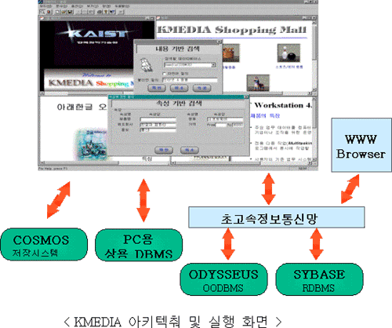

KMEDIA는 멀티미디어 문서를
저작하고 이를 데이터베이스에 저장, 관리, 검색할 수 있는 DB 연동
멀티미디어 저작도구이다. KMEDIA는 텍스트 내용 기반 검색과 속성
기반 검색을 동시에 지원할 수 있어 원하는 문서를 빠르게 찾을
수 있다. 기존 멀티미디어 저작도구에서는 메뉴 기반으로만 멀티미디어
정보들을 검색하기 때문에 원하는 멀티미디어 문서를 찾는데 많은
시간과 노력이 들어간다. KMEDIA는 이러한 불편함을 완벽히 해소한
솔루션을 제공한다. KMEDIA는 이미지, 오디오, 비디오 등의 멀티미디어
정보를 데이터베이스에 저장함으로써 기존의 저작도구가 멀티미디어
정보를 파일에 저장하는 것에 비하여 검색속도가 빠르고 안전하다.
또한, KMEDIA는 멀티미디어 문서를 HTML 문서의 형태로 저장할 수
있는 기능을 제공하여 웹 브라우저를 이용한 정보공유가 가능하다.
KMEDIA는 오디세우스 객체관계형
DBMS(ORDBMS), 정보검색용 고성능 저장 시스템인 오디세우스/COSMOS,
상용 DBMS인 Sybase, 그리고 PC용 상용 DBMS인 SQL Anywhere를 하부
저장 시스템으로 이용하여 멀티미디어 문서들을 데이터베이스에
저장한다. 따라서, 사용자는 데이터베이스를 이용하여 여러 문서들을
빠르게 검색하고 편리하게 관리할 수 있다.
KMEDIA는 정보 검색 기능을
제공하는 오디세우스 DBMS와 오디세우스/COSMOS를 하부 저장 구조로
사용함으로써 내용 기반 검색과 속성 기반 검색 기능을 제공한다.
KMEDIA는 멀티미디어 문서의 텍스트 타입 객체의 내용을 오디세우스
DBMS와 오디세우스/COSMOS의 정보 검색 기능을 이용하여 텍스트
인덱스를 만들어 내용 기반 검색에 이용한다. 또한, 멀티미디어
문서마다 정의된 속성의 값에 대해서도 텍스트 인덱스를 만들어서
속성 기반 검색에 이용한다. 이 두 가지 기능을 이용하여 사용자는
원하는 문서를 더욱 쉽고 빠르게 찾을 수 있다.

사용자는 KMEDIA의 문서
저작 기능을 이용하여 그래픽(선, 사각형, 타원), 이미지(BMP,
GIF, JPG 포맷), audio (WAV 포맷), video (AVI 포맷), 그리고
텍스트 (RTF, ASCII포맷) 타입의 객체들을 포함하는 멀티미디어
문서를 저작할 수 있다. 특히, 텍스트 타입의 객체를 저작할
때에는 Microsoft Word를 에디터로 활용 가능하므로 Microsoft
Word에서 제공하는 다양한 기능을 이용하여 텍스트 타입 객체를
저작할 수 있다.
 하이퍼 링크 기능
하이퍼 링크 기능
문서내의 객체에 하이퍼
링크를 설정하여, 링크를 따라 다른 문서로의 이동이 가능하다.
스크립트 언어 지원
시간에 따라 동적으로
변화하는 멀티미디어 문서를 표현하기 위해 스크립트 언어를
지원한다. 멀티미디어 문서 내의 객체에 스크립트를 지정함으로써
정해진 시간에 객체의 크기, 위치 등을 변경하고, 오디오와
비디오 객체를 플레이 할 수 있다.
다양한 DBMS 지원
오디세우스 DBMS, 정보검색용
고성능 저장 시스템인 오디세우스/COSMOS, 상용 DBMS인 Sybase,
그리고 PC용 상용 DBMS인 SQL Anywhere 지원
텍스트 내용 기반 검색 기능
속성 검색 기능
사용자가 데이터베이스
내의 멀티미디어 문서들에 공통으로 필요한 속성들을 정의할
수 있고, 정의한 속성의 값으로 문서를 검색할 수 있다. 예를
들면, 문서의 작성일을 속성으로 정의하고 이를 이용하여 특정일에
만든 문서를 검색할 수 있다. 이 기능은 연결된 DBMS를 통하여
효율적으로 수행된다.
실행 환경
 플랫폼 : Microsoft Windows
98/2000/XP/NT 플랫폼 : Microsoft Windows
98/2000/XP/NT
지원하는 DBMS : 오디세우스
DBMS, 오디세우스/COSMOS, Sybase, SQL Anywhere
필요한 S/W : 다양한
문서 편집 기능과 단어 단위의 하이퍼 링크 기능을 사용하기
위해 Microsoft Word 95/97/2000/XP/2003이 필요하다.
사용 방법
KMEDIA를 사용하기 위해서는
KMEDIA의 설치 후 문서를 저장할 데이터베이스를 생성하여야
한다. 데이터베이스의 생성 방법은 사용하는 DBMS의 종류별로
매뉴얼에 명시되어 있다. 속성 검색 기능을 위해서는 데이터베이스
생성 후 '속성 정의'를 수행한다.
KMEDIA는 보기 모드와
편집 모드의 두 가지의 실행 모드가 있다. 보기 모드에서는
데이터베이스에 저장된 문서 사이를 링크를 통하여 이동하면서
볼 수 있고, 키워드와 속성을 이용한 문서 검색과 스크립트
언어의 실행이 가능하다. 편집 모드에서는 멀티미디어 문서를
생성, 수정, 삭제, 정보 검색을 위한 인덱스 구축, 스크립트
언어 기술 등을 할 수 있다.
|